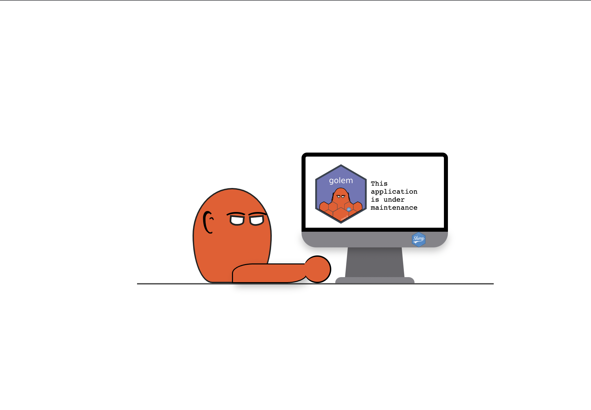

You can download it from your favorite CRAN repository, or by running the following command:
pak::pak("thinkr-open/golem@v0.4.0")
What’s up with this new version?
Lighter dependency tree
About dependencies
When we released the first version of {golem} on CRAN, we decided that all {golem}-based app should depend on {golem}. This was a conscious decision, and we made it because {golem} comes with a bunch of internal functions that are used at runtime.
For example bundle_resources() links all the external resources (CSS, JS, …), is_running() detects that the current app is a {golem} app, with_golem_options() allows passing arguments to your run_app() functions (and to set a new cool option that I’ll talk about below), and others. We were very aware that this choice came with a drawback: adding a dependency to every {golem}-based app.
Dependency management is a big topic in the software engineering world, and some projects tend to go for minimizing as much as possible the number of dependencies.
They are right (to a certain extent): adding dependencies means that you can be subject to some troubles, notably if one of the packages you’re relying on gets removed from the CRAN.
Even in a contained world where you have your own CRAN-like repository, there is always the drawback of installation time: the more dependencies you have, the longer it takes to install the package, and by extension to compile a Docker image (for example). This is why we could have been tempted to imagine a different approach for {golem}: creating files inside your project that would contain everything you need. But I think that this approach can be way less safe and practical, for reasons I’ll develop below.
You need dependencies for a {shiny} app
First, whatever happens, you’ll need to rely on {shiny}, as you are building a {shiny} app. And you’re likely to add a bunch of other packages along the way. So the “very small dependency tree” is a myth if you’re building a web app. {shiny} itself already has 31 dependencies.
On a larger scale, adding scripts to your app for functions that can come from a dependency is an issue in terms of security and maintenance. For example, let’s imagine that tomorrow, we discover a security breach in {shiny}, or in the way {golem} bundles the resources, or any other package.
How can we be sure that all your apps are updated once we’ve built a patch? Yep, updating the packages. The solution of adding files would mean that you would have to go inside all your applications and update the files, with all the issues that come with this process (time-consuming, the risk of forgetting to update, typos…)
Dev dependencies vs runtime dependencies in {golem}
That being said, it’s true that previous versions of {golem} used to have too many hard dependencies, creating issues when sending the apps to production. In prod, many of {golem} dependencies were useless, and you don’t need them at runtime.
That’s because {golem} has two types of dependencies: dev dependencies (the packages you’re using when developing with {golem}) and runtime dependencies (the ones used when the application runs).
In version 0.3.3 of {golem}, we started removing dev dependencies. The first to go was {dockerfiler}, and now with 0.4.0 we have moved all the dev dependencies to the Suggests section of the DESCRIPTION. What that means is that if you’re using {golem} in a fresh R distribution, the dependency tree is way lighter, as you can see below. 65 dependencies for 0.3.5, and 37 for 0.4.0.
Yes, but as I said before, every {shiny} app will depend on {shiny}. So how many packages does {golem}actually add to your dependency tree? In other words, how many packages does {golem} depend on that are not already a {shiny} dependency?
That’s 6 additional packages. {golem} & {attempt} being packages from ThinkR, and {config}, {here}, {rprojroot}, {yaml} packages from Posit open source team.
So yes, adding a dependency adds a small risk. But now it’s up to you to decide if trying to remove {golem} from your dependency tree is worth the time, compared to the time gained while developing and deploying 😅
Note that soon, we’ll work on removing {attempt} and {here} from the dependencies, but these three being
golem::install_dev_deps()
To be sure that you have all the dependencies needed when developing, {golem} now has a install_dev_deps() function. This function will check that you have everything needed to develop, and it will not be called at deployment time.
You’ll now find this function at the top of your 01_start.R script.
Maintenance mode
One new feature I’m particularly excited about is the “Maintenance mode” option.
This feature was born out of a specific need: in production, I needed to make an application go “offline”, as I knew the db was about to migrate. That implied doing some weird changes in the UI for a short period of time, before putting the app back.
That’s when the idea of a “Maintenance mode” was born, for the times when you need your application to be unavailable: database updates, API changes, etc. When this maintenance mode is turned on, your application will be paused and a specific page will be displayed to your users. And the cool thing is that it’s just an environment variable away: you don’t need to change anything in your app.
The maintenance mode will be turned on whenever the R process detects that the GOLEM_MAINTENANCE_ACTIVE environment variable is set to TRUE. It will look like this:

Big Up to my dear colleague Arthur for developing this feature!
To visualize the maintenance page locally, you can run the following code:
Note that {golem} comes with a default maintenance page, and you can replace it with your own page by passing either an html_document or a tagList to the with_golem_options function in run_app.R: